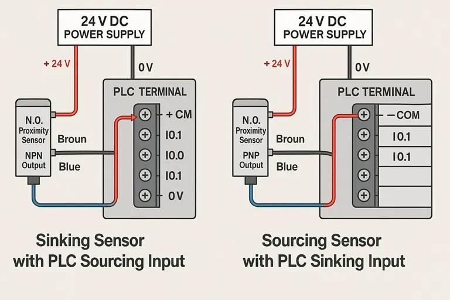
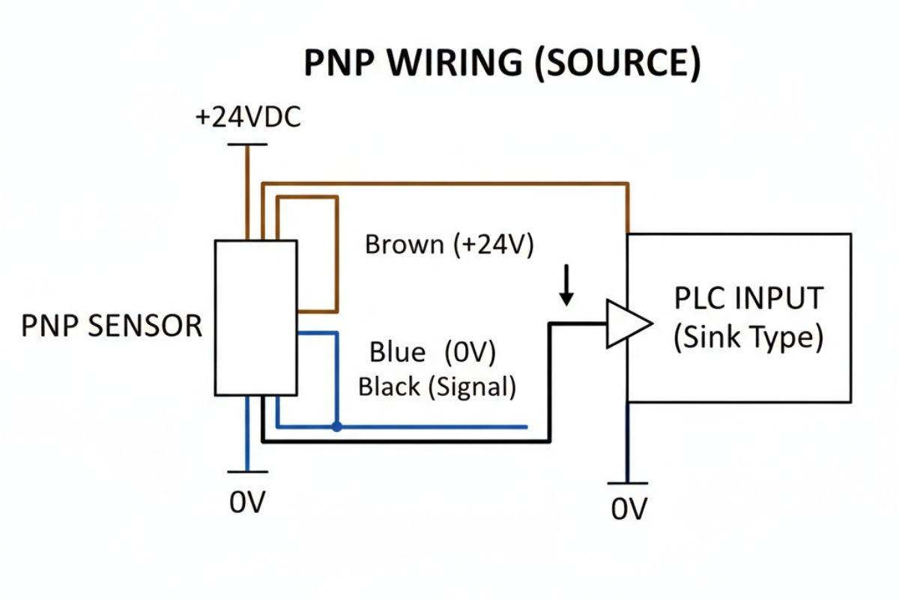

1. Definition
In industrial automation, sinking and sourcing describe how a device supplies or provides a path for electrical current in a DC circuit. They are especially important when connecting 3-wire proximity sensors, photoelectric sensors, and other digital field devices to PLC digital inputs.
The two common sensor output types are:
- PNP output: Typically sources current from the positive supply to the connected load or PLC input.
- NPN output: Typically sinks current from the connected load or PLC input toward 0 V.
The essential rule is that the sensor output type must be electrically compatible with the PLC input circuit. A sensor can be perfectly functional and still fail to operate a PLC input if the wiring logic is incompatible. Electricity is not impressed by our confidence.
2. Understand sourcing and sinking first
A typical industrial DC control circuit uses a positive supply, commonly +24 V DC, and a 0 V return.
Current flows through a complete circuit. In conventional current notation, it flows from the positive supply, through the load, and back toward 0 V.
2.1 Sourcing
A sourcing device provides current from the positive supply to the connected circuit.
+24 V
|
v
Sourcing output
|
v
Load / PLC input
|
v
0 V
When the sourcing output turns ON, current can flow through the load toward 0 V.
2.2 Sinking
A sinking device provides a path for current to return toward 0 V.
+24 V
|
v
Load / PLC input
|
v
Sinking output
|
v
0 V
When the sinking output turns ON, current can flow from +24 V through the load and the sinking output to 0 V.
These are simplified conceptual circuits. The actual circuit depends on the input module, output transistor, common terminals, and load arrangement.
3. PNP vs NPN sensor outputs

PNP sensor
Switches the output toward +24 V when ON.

NPN sensor
Switches the output toward 0 V when ON.
For a common three-wire DC sensor:
| Wire color | Typical function |
|---|---|
| Brown | Positive supply, usually +24 V DC |
| Blue | 0 V supply |
| Black | Switching output |
Always verify the manufacturer's wiring diagram. Wire colors and functions can differ by device type, region, or special configuration.
3.1 PNP sensor operation
A PNP sensor typically connects its output toward the positive supply when it detects its target.
Brown -> +24 V DC
Blue -> 0 V DC
Black -> PLC digital input
Sensor detects target:
Black output rises toward +24 V
PLC input turns ON
Current flows from the sensor's positive-side switching output, through the PLC input circuit, and back to the input common at 0 V in a typical compatible arrangement.
3.2 NPN sensor operation
An NPN sensor typically connects its output toward 0 V when it detects its target.
Brown -> +24 V DC
Blue -> 0 V DC
Black -> PLC digital input
Sensor detects target:
Black output is pulled toward 0 V
PLC input turns ON with a compatible
sourcing-input circuit
Here, current flows from the positive-side input circuit through the sensor's output transistor toward 0 V.
Important: A PNP sensor is commonly paired with a sinking PLC input, while an NPN sensor is commonly paired with a sourcing PLC input. This terminology describes the current relationship between the connected devices, not simply whether a terminal reads high or low.
4. The four terms that must not be confused
| Term | Meaning |
|---|---|
| PNP sensor | Typically sources current when its output is ON |
| NPN sensor | Typically sinks current when its output is ON |
| Sinking PLC input | Input circuit provides a path toward 0 V |
| Sourcing PLC input | Input circuit provides current from the positive supply |
For common industrial 24 V DC digital inputs:
| Sensor output | Compatible PLC input arrangement |
|---|---|
| PNP | Sinking input |
| NPN | Sourcing input |
The terminology can initially seem backward because the sensor and PLC input are commonly described from opposite sides of the same current path. Focus on the actual current path rather than memorizing isolated labels.
5. Wiring a PNP sensor to a PLC input
Assume a 24 V DC PNP proximity sensor connected to a compatible sinking PLC input.
+24 V DC
|
+-----+-----+
| |
Sensor PLC input
Brown circuitry
| |
| +---- Input common -> 0 V
|
Sensor
output
Black
|
+----------> PLC input I0.0
Sensor Blue -> 0 V
The drawing is conceptual. The PLC input's internal circuitry is not necessarily wired exactly as shown in this simplified layout.
When the sensor detects a target:
- Its output transistor switches ON.
- The black wire rises toward +24 V.
- Current flows through the PLC input circuit.
- The PLC input changes to ON.
- The PLC program can use that input in a sequence or interlock.
When the sensor output switches OFF, current through the input circuit stops and the PLC input normally returns to OFF.
6. Wiring an NPN sensor to a PLC input
Assume a 24 V DC NPN proximity sensor connected to a compatible sourcing PLC input.
+24 V DC
|
PLC input
circuitry
|
+---- Input I0.0
|
+---- Input common
| |
| +24 V*
|
Sensor
output
Black
|
NPN output
|
Sensor Blue -> 0 V
Sensor Brown -> +24 V DC
* The input common connection shown is a conceptual representation of a compatible sourcing-input arrangement. The actual terminal layout and internal circuit must be confirmed from the PLC module's manual.
When the sensor detects its target, the NPN transistor turns ON and pulls the output toward 0 V. Current flows from the PLC input circuit toward the sensor output and then to 0 V, causing the input to turn ON.
7. Why mismatched wiring fails
Consider a PNP sensor connected to a PLC input that requires an NPN sinking output, or vice versa.
Possible symptoms include:
- The sensor indicator changes state, but the PLC input does not.
- The sensor works when tested independently but not when connected to the PLC.
- The PLC input remains permanently OFF.
- The circuit behaves unpredictably due to an incorrect common connection.
- A wiring error causes an electrical fault or damages a device.
The correct diagnostic procedure is to verify the sensor output type, PLC input type, supply polarity, input common, and actual voltage/current path before replacing hardware.
Never assume that a black output wire should always be +24 V or always be 0 V. Its voltage depends on the output type, state, load, and circuit configuration.
8. Practical maintenance troubleshooting
Suppose a proximity sensor detects a component on a conveyor, but the PLC does not register it.
| Step | Check | What it establishes |
|---|---|---|
| 1 | Confirm sensor power and indicator | Whether the sensor is powered and detecting the target |
| 2 | Identify PNP or NPN output | Which switching arrangement is required |
| 3 | Verify PLC input type and module manual | Whether the input is electrically compatible |
| 4 | Check brown and blue supply wiring | Whether the sensor has correct power and polarity |
| 5 | Check input common wiring | Whether the circuit has the required return path |
| 6 | Measure output voltage using an appropriate method | Whether the output switches as expected |
| 7 | Observe the PLC input LED and online bit | Whether the electrical signal reaches the input |
| 8 | Check PLC tag/address and logic | Whether the program uses the correct input and conditions |
Measurements should be performed by authorized personnel using suitable instruments and safe electrical procedures.
9. PNP/NPN vs NO/NC
These describe two different properties.
- PNP/NPN: Describes the sensor's output transistor and current-switching arrangement.
- NO/NC: Describes the output's logical behavior in its normal, non-actuated state, according to the device's specified convention.
For example, a PNP sensor can be normally open (NO) or normally closed (NC), depending on the model and configuration.
| Property | Question answered |
|---|---|
| PNP or NPN | How does the output switch current? |
| NO or NC | What output state occurs when the sensor is not actuated? |
A PNP NO sensor typically turns its output ON when the target is detected. A PNP NC sensor typically turns its output OFF when the target is detected, depending on the device's specified behavior.
Do not use NO/NC terminology as a substitute for identifying PNP/NPN wiring compatibility.
10. Two-wire vs three-wire sensors
| Feature | Two-wire DC sensor | Three-wire DC sensor |
|---|---|---|
| Conductors | Usually supply and load in series | Supply positive, supply 0 V, and output |
| Output arrangement | Often switches current through the load | Commonly PNP or NPN transistor output |
| OFF-state leakage | May be relevant | Depends on output design |
| Wiring compatibility | Depends on sensor and input specifications | Depends on PNP/NPN type and input circuit |
Two-wire sensors can have residual leakage current in the OFF state or a voltage drop in the ON state. The PLC input must be compatible with these characteristics.
Three-wire sensors are common in industrial automation because the supply and output connections are separate.
11. Important electrical considerations
- Confirm the sensor's supply-voltage range and polarity.
- Confirm the PLC input module's voltage and current specifications.
- Check whether input groups share a common terminal.
- Do not connect different supply commons together unless the circuit design permits it.
- Check the sensor's maximum output current and the PLC input current requirement.
- Verify isolation and grounding requirements.
- Follow the manufacturer's wiring diagram instead of relying on generic color conventions alone.
- Do not assume that all PLC input modules support both PNP and NPN sensors.
Many PLC input modules support only one common wiring arrangement per input group. Some specialized modules support multiple configurations, but this must be confirmed from the hardware documentation.
12. Interview questions and answers
Q1. What is a PNP sensor?
A PNP sensor typically sources current from the positive DC supply to the output load when its output is ON.
Q2. What is an NPN sensor?
An NPN sensor typically sinks current by connecting its output toward 0 V when its output is ON.
Q3. Which PLC input is commonly used with a PNP sensor?
A sinking PLC input, where the input circuit provides a current path toward 0 V.
Q4. Which PLC input is commonly used with an NPN sensor?
A sourcing PLC input, where the input circuit supplies current from the positive side.
Q5. Can an NPN sensor work with any PLC digital input?
No. The sensor output arrangement must be compatible with the PLC input circuit, common wiring, voltage, and current specifications.
Q6. What is the difference between PNP/NPN and NO/NC?
PNP/NPN describes the output's current-switching arrangement. NO/NC describes its normal logical behavior when the sensing condition is not actuated.
Q7. The sensor indicator turns ON, but the PLC input stays OFF. What should be checked first?
Check PNP/NPN compatibility, the PLC input type, supply polarity, input common, sensor output voltage, and the input terminal wiring.
13. Final mental model
Remember the current path:
- PNP: The sensor output supplies current from the positive side. It commonly works with a sinking PLC input.
- NPN: The sensor output provides a path toward 0 V. It commonly works with a sourcing PLC input.
- NO/NC: Defines the output's normal switching behavior, not its current direction.
- PLC input ON: Means the input circuit recognizes the required electrical state, not necessarily that every upstream component is healthy.
The practical rule is simple: identify the sensor output, identify the PLC input circuit, and verify that current has a complete compatible path.
Next topic: 03_Analog_Ranges | Analog ranges: 4–20 mA, 0–10 V, scaling.